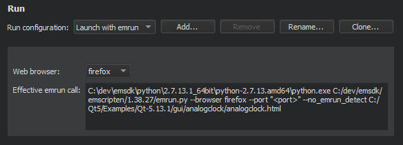

Run applications in a web browser
To build Qt applications in WebAssembly format and run them in a web browser:
- Open a project for an application you want to run in a web browser.
- Go to Projects > Build & Run, and then select the WebAssembly kit as the build and run kit for the project.
- Select Run Settings to specify run settings.
- In Web browser, select a browser.

Build Qt applications in WebAssembly format and run them in a web browser as described in Build for many platforms and Run on many platforms.
See also Build applications for the Web and Enable and disable plugins.